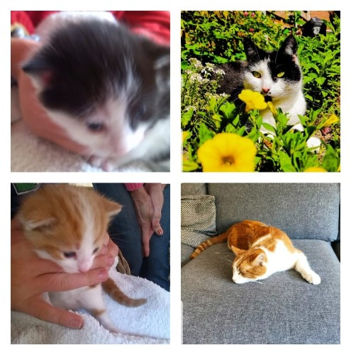

Over mij
Stijn van Gils - 5/10/2020
Hallo! Ik ben Stijn, en ik woon in Deventer.
In mijn vrije tijd ben ik (op zaterdag) jeugdscheidsrechter, voetballer, en programmeer en game ik veel.
Ik heb 2 katten, donder en bliksem (zie foto hier beneden). En een broer, Koen.
